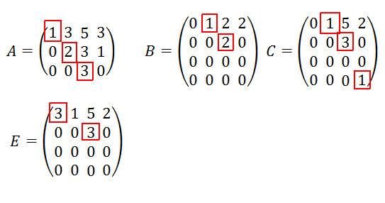

Se define el rango de una matriz como el máximo número de columnas o filas linealmente independientes de la matriz. Si tenemos una matriz \(A\) de dimensiones \(n\times m\), entonces el rango de dicha matriz es como máximo el valor mínimo entre \(n\) y \(m\). Es decir, en una matriz \(2\times 3\), el rango no puede ser mayor que 2.
Para calcular el rango de una matriz, podemos usar o bien el método de Gauss, o bien determinantes.
En una matriz escalonada, que es la que se obtiene al terminar de aplicar el método de Gauss sobre una matriz, los pivotes son aquellos elementos que son distinto de cero y además tienen por debajo todos los elementos cero. Ej:

Además de con el método de Gauss, podemos usar determinantes para calcular el rango de la matriz (aunque la matriz no sea cuadrada). El rango de la matriz coincidirá con el tamaño del mayor determinante no nulo que podamos encontrar dentro de la matriz. El problema principal de este método es que requiere de probar todas las posibles combinaciones de determinantes para poder asegurar el valor del rango de la matriz.
El teorema de Rouché, o teormea de Rouché-Frobenius nos da qué casos se pueden dar en un sistema de ecuaciones, y cómo identificar cada caso. Supongamos que tenemos un sistema de ecuaciones de la forma \(Ax = b\), que puede expresarse como \(\left( A \; \vert \; b \right)\), donde a \(A\) la llamamos matriz de coeficientes y a \(\left( A \; \vert \; b \right)\) la llamamos matriz ampliada del sistema de ecuaciones. Pues bien:
Cuando un sistema \(\left( A \; \vert \; b \right)\) tiene una única solución (compatible determinado), es decir, \(\vert A \vert \neq 0\), las soluciones de dicho sistema son de la siguiente forma:
\[\begin{gather*} x = \frac{\vert \left( b \, a_2 \, a_3\right) \vert}{\vert A \vert} \\\\ y = \frac{\vert \left( a_1 \, b \; a_3\right) \vert}{\vert A \vert} \\\\ z = \frac{\vert \left( a_1 \, a_2 \; b\right) \vert}{\vert A \vert} \end{gather*}\]
En general la regla de Cramer nos conviene aplicarla cuando en la matriz \(A\) aparezca algún parámetro (\(m, k, ...\)).
El método de Gauss nos permite calcular siempre las soluciones de un sistema de ecuaciones, independientemente de si el sistema es compatible determinado, compatible indeterminado o incompatible. Las operaciones que se pueden realizar en este método son:
El propio método de Gauss hemos de aplicarlo siempre de forma escalonada, de manera que:
Es importante saber qué impacto tienen las operaciones del método de Gauss sobre el determinante de una matriz porque en ciertas ocasiones es más sencillo calcular el determinante haciendo pocas operaciones de Gauss que de otra manera.
Únicamente tendrán inversa, denotada por \(A^{-1}\) aquellas matrices que sean cuadradas y además su determinante no sea nulo. La matriz inversa es aquella que cumple que \(A^{-1}A = AA^{-1} = I\). Para calcular la inversa de una matriz disponemos de dos métodos:
El método de Gauss simple acaba una vez hayamos recorrido todos los elementos de la diagonal y hecho ceros por debajo de estos. No obstante, existe un método que extiende al anterior conocido como método de Gauss-Jordan en el cuál además de hacer ceros por debajo de la diagonal, haremos ceros también por encima, y una vez únicamente tengamos la diagonal, dividiremos cada fila por el elemento de la diagonal de esa fila.
Así pues, el cálculo de la inversa se reduce a aplicar Gauss-Jordan sobre el siguiente sistema:
\[ \left( A \, \vert \, I\right) \stackrel{G-J}{\longrightarrow} \left( I \, \vert \, A^{-1}\right) \]
Donde \(I\) denota la matriz identidad.
Dada una matriz \(A\), se define su matriz adjunta como aquella donde sustituimos cada elemento de la matriz por su adjunto, definido de la siguiente manera:
Si \(A = (a_{ij})\), entonces para cada elemento \(a_{ij}\) de la matriz definimos su adjunto como \((-1)^{i+j}\cdot \vert A_{ij} \vert\), donde \(A_{ij}\) denota la matriz resultante de eliminar la fila \(i\) y la columna \(j\) de la matriz \(A\).
Así pues, la inversa de una matriz se puede calcular como \(A^{-1} = \frac{(A^{adj})^t}{\vert A \vert}\)